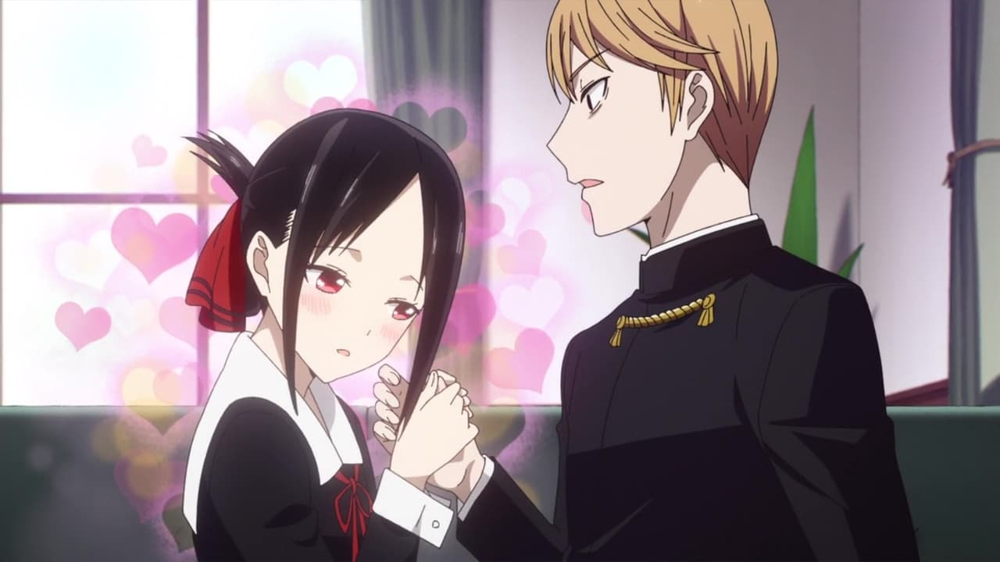

COMEDIA
Etimologia
Los animes de comedia son variados en términos de estilo e historia. Algunos son sátiras de clichés de anime usados en exceso, mientras que otros combinan el ingenio con la acción y la aventura. No hay dos animes de comedia exactamente iguales y cada programa trae algo único a la mesa.
Caracteristicas
Los animes de comedia se caracterizan por no tomar una secuencia en general ademàs de no tomarse enserio su propia trama, estan dirigidos a todo pùblico, con situaciones demasiado surrealistas y hasta extrañas, el mayor objetivo de este tipo de anime es llamar la atenciòn de los consumidores, el humor, los chistes y las situaciones graciosas son la mayor fortaleza de este gènero de entretenimiento.
Animes Famosos
Spy x Family (2022)
Komi-San wa, Comyushou desu (2021)
Kaguya-sama wa Kokurasetai: Tensai-tachi no Renai Zunousen (2019)
Bungou Stray Dogs (2016)
One Punch Man (2015)
Twilight es el detective más aplicado de una agencia que se dedica a prevenir guerras y mantener la paz entre dos naciones en conflicto. Su más reciente misión, sin embargo, prueba ser la más dura de todas las que le han asignado. Tiene que "formar" una familia para dar con un elusivo político que solo aparece en la escuela elitista de su hijo. La tarea será difícil, ya que no está acostumbrado a depender de otras personas, y cuando consigue adoptar a una niña, Anya Forger, y convencer a una joven para aparentar ser su esposa, Yor Forger, los secretos que ambas ocultan podrían poner en peligro su carrera, su misión y su vida.
Komi-san es la nueva Madonna de la escuela. Todos los chicos la quieren, las chicas quieren ser como ella, y al momento de escoger asientos, es una batalla campal por un puesto a su lado. Sin embargo, el afortunado ni siquiera parece darse cuenta de su tremendo privilegio, y eso hace que la clase lo deteste. Hitohito no quiere empezar con el pie izquierdo, así que su primer intento de hacer amigos se dirigirá directamente a Komi, la diosa del colegio. Pero cuando intenta establecer una conversación con la chica se da cuenta de que la muchacha sufre de una ansiedad social tan brutal, que es incapaz de comunicarse con él usando palabras.
En la importante academia Shuchiin, Miyuki Shirogane y Kaguya Shinomiya son los presidentes del consejo estudiantil. Son muy respetados y venerados en la escuela, y por supuesto, cuentan con incontables admiradores. Pero también son vistos como una pareja idílica, si es que realmente lo fueran. ¿El problema? No lo son. A pesar de que tienen años enamorados. Los dos son tan orgullosos que no han sido capaces de decirse que se quieren, y tratan de hacer que el otro lo haga primero usando juegos mentales que forzarán a demostrar sus verdaderos sentimientos.

Si quieren una dosis de humor sobrio, Bungou Stray Dogs es la fórmula perfecta. Es una serie protagonizada por adultos con temas sombríos, pero el colorido elenco de personajes mantendrá el humor muy en alto, también. Atsushi Nakajima es un huérfano que nunca ha tenido un sentido de pertenencia sólido. En el orfanato lo tratan como basura, y decir que está aliviado de haber sido expulsado del mismo, no sería exagerar. Sin embargo, antes de irse, dejó un pendiente: la aparición misteriosa de un tigre que solamente Atsushi parece no haber visto.
Cuando el humor es el foco principal de un shounen de pelea, sabes que estás a punto de ver algo único. Saitama es un hombre común, cuya apariencia no denota su verdadera fortaleza. Resulta ser que Saitama ha entrenado su cuerpo sin parar para convertirse en el hombre más fuerte del mundo, y curiosamente, lo ha logrado. Es un anónimo en una sociedad de superhéroes que lo necesita, urgentemente. Pero a Saitama lo que más le interesa es llegar a sus ofertas del supermercado. Cuando un androide que lo trata de "maestro" le ruega para que aplique para una licencia de superhéroe, su vida ordinaria y aburrida se empieza a complicar.